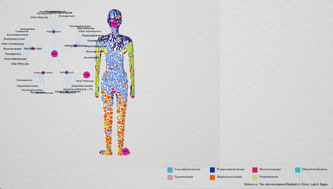

Ten Percent Human
2012
microbiome research, web design, data visualization
Ten Percent Human is a web-based creative visualization which delivers information about quantity and diversity of microbiomes. This project was inspired by a statement made by a noted Molecular Biologist, Dr. Bonnie Bassler, "Humans have one trillion cells of their own, but 10 trillion cells of bacteria. At best you're only 10% human."
During the research process, I discovered that humans share a great amount of bacteria with each other and the bacterial culture that lives with us differs greatly due to lifestyle and geo-location. Prior to the research stage, I had thought I would have a very unique set of bacteria that distinguishes me from others, but that was not the case. Additionally, I learned that not all bacteria are bad. We all have good and bad bacteria, but it is the matter of having a good balance between the two in order to maintain healthy. Overall, my inspiration had started with the fascination of the amount of bacteria we humans hold. During the process, I found it even more fascinating that we share a great amount of bacteria with those next to us. This helped me see my surroundings in a different perspective: how similar and different we are from each other. My hopes are that this project will inspire others into seeing their surroundings differently and learn more about the bacteria that live with us at all times.
Software: HTML5, CSS3, Javascript, three.js, D3
Main
Amount
Size

Diversity
Geography